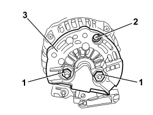
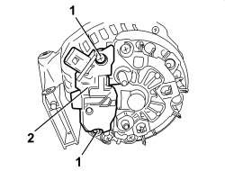

5530A24 ALTERNATOR VOLTAGE REGULATOR - R.R. WITH ALTERNATOR REMOVED
- Path
- Procedures > 55 ELECTRICAL EQUIPMENT > 5530 CURRENT GENERATION > 5530A ALTERNATOR AND COMPONENTS > 5530A24 ALTERNATOR VOLTAGE REGULATOR - R.R. WITH ALTERNATOR REMOVED
- Kind
- repair procedure (removal / refitting; the operation number is the code)
- Applies to
- all engines; all production periods
- Interactive page
- https://sloeber94.github.io/elrnDB-aBrrSpdr/en/#/946002372
Applies to: all engines; all production periods
 Removing
Removing
 Refitting
Refitting1. Undo both nuts.
2. Undo the bolt.
3. Recover the rear alternator cover.

Applies to: all engines; all production periods
1. Unscrew and remove both bolts.
2. Recover the alternator voltage governor.

Applies to: all engines; all production periods
Refitting
Removing- Check that the voltage governor is not damaged.
- Thoroughly clean the removed parts.
- Place the voltage governor in position and tighten the two fixing bolts.
- Position the cover and secure with the bolt and both nuts.